늘 새로운 경험을 감사히 여기고 피하지 않아야지
비로서 지속 가능한 성장을 할 수 있을 것이라는
마음가짐으로 많은 것들을 경험해보았고, 쓰러져도
다시 일어날 수 있는 정신력을 기를 수 있었습니다.
새로운 경험을 즐거워합니다,
성장하는 것을 좋아합니다.
2년의 학교생활동안 많은 대회와 활동을 하면서
성장이라는 갈증에 늘 목말라했습니다.
거침없이 나아갔던 네트워크 전공에
회의감을 느끼고 방황하던 중, 어느 날 발견한
'멋진' 웹페이지는 저에게 흥분과 흥미라는 감정을
심어주었습니다..
'멋진 웹페이지를 처음 보았을 때, 그 감정을
아직도 잊지 않고 생생히 기억하고 있습니다.
이 세상 사람들에게 그때의 제가 느꼈던 놀라움과 감동을
똑같이 선사해드리면서 프론트엔드 개발자를 목표하고 있습니다.